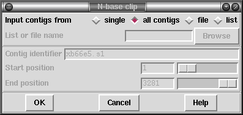

The purpose of this function is to remove runs of Ns or -s
from the ends of sequences. Other bases may be interspersed in a run of
dashes and the run will still be clipped, provided there are a
sufficient number of non-A/C/G/T base calls. The exact algorithm for
determining where a 'run' will stop is as follows:
N or -, -1 for A,
C, G or T, zero for anything else.
Generally this will have no effect (when on good data). It can never 'grow' a sequence (by extending the cutoffs into the good data). It will never form a hole in a contig by clipping all sequences in a region (as it will extend the data from both ends of the hole to join it back together again).